오인성
Android Developer
프로젝트
프로젝트 목차
목표와 코스 준비, 연습 기록을 돕는 Pleos 차량용 앱
스마트 헬스케어 키오스크 서비스 Android 앱
서버 상태와 성능을 시각화하는 Android 모니터링 앱
글귀를 짧은 이미지 콘텐츠로 공유하는 Android 앱
프로젝트 1
한길졸업
2026.10 ~ 진행 중 / Android 개발 및 검증
차량 상태와 화면 조작 연결
- 주차 상태와 UX 제한 해제를 함께 확인하는 상세 조작 잠금 구현.
- 끊김, 미확인, 권한 거부 시 잠금을 유지하도록 차량 SDK 상태와 연결.
- Kotlin, Compose 멀티 모듈 경계 구성.
지도와 연습 기록 검증
- MapLibre 기반 실제 지도 표시, 오류 복구와 화면 재생성을 Pleos 환경에서 검증.
- Room 기반 연습 세션 저장과 복원, DB 마이그레이션과 앱 재실행 후 복원 검증.
- 자동 검사와 Pleos 시나리오로 화면 동작과 저장 상태 확인.
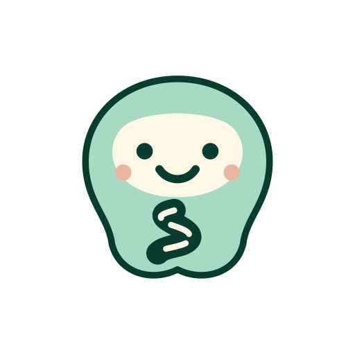
한길졸업 브랜드 가이드 캐릭터
민트와 크림 색상 토큰,
브랜드 캐릭터와 주차 화면 안내 리소스 적용
문제 해결 1
주차와 UX 상태를 함께 확인하는 상세 조작 잠금
문제
이전 주차 값을 사용하는 동안 새 D 신호가 도착하면 상세 조작이 열릴 수 있었습니다. 연결 끊김이나 권한 거부에서도 잠금을 유지해야 했습니다.
원인
차량과 UX 제한은 별도 흐름으로 갱신됩니다. 화면에 합성된 상태와 실제 이벤트 처리 시점의 최신 값이 다를 수 있었습니다.
판단과 구현
- 주차 확인과 UX 제한 해제를 모두 요구하고 초기 미확인 상태는 잠금으로 처리했습니다.
- 조작 직전 차량과 제한의 최신 값을 다시 읽고, 재연결 시 이전 값과 콜백을 무효화했습니다.
결과
- 상태 조합, 새 D 신호 직후 조작, 끊김과 권한 거부를 단위 테스트로 확인했습니다.
- Pleos에서 P→D→P의 잠금과 정상 복귀를 확인했습니다. UX 독립 조합과 끊김, 권한 거부의 오류 주입 실기는 미실행입니다.
대체안 / 회고
UX 해제만으로 주차를 추정하거나 버튼만 비활성화하면 갱신 사이의 이벤트가 남습니다. 실제 처리 지점에서도 두 조건을 확인했습니다.
문제 해결 2
연습 세션의 저장 조건과 과거 기록 보존
문제
준비 내용을 바꿔도 과거 연습의 목표와 코스는 유지해야 했습니다. 중복 요청, 저장 중 주행 전환, 시각 역행도 정상 기록으로 저장하면 안 됐습니다.
원인
현재 준비 내용만 참조하면 과거 기록이 달라집니다. 화면에서 시작 조건을 확인해도 비동기 DB 쓰기 중 차량 상태가 바뀔 수 있었습니다.
판단과 구현
- 시작 당시 선택과 버전, 표시명을 스냅샷으로 저장하고 활성 세션을 하나로 제한했습니다.
- Room 트랜잭션 안에서 저장 전후의 조작 허용 조건을 확인해 잠금 시 롤백하고, 중복과 시각 오류를 별도 결과로 반환했습니다.
결과
- DB 테스트로 v1→v2 준비 보존, 중복 처리, 시각 역행과 저장 중 잠금 롤백을 확인했습니다.
- Pleos에서 시작, 앱 재실행, P와 D 전환, 종료와 재실행 뒤 실제 DB의 준비와 기록 보존을 검증했습니다.
대체안 / 회고
버튼의 중복 클릭 방지만으로는 재실행과 동시 요청을 처리하기 어려웠습니다. 저장소에서도 상태를 검사하고 잘못된 종료 시각을 0초로 보정하지 않았습니다.
문제 해결 3
지도 재생성과 오류 복구에서 이전 콜백 차단
문제
재시도나 화면 재생성 뒤 이전 MapView 콜백이 새 화면을 바꿀 수 있었습니다. 스타일이 로딩돼도 실제 타일 렌더링은 실패할 수 있었습니다.
원인
Native 지도 콜백은 비동기로 도착합니다. 재시도 번호만으로는 같은 시도에서 다시 만들어진 MapView를 구분하지 못했습니다.
판단과 구현
- 재시도 번호와 View 생성 토큰을 함께 비교하고 현재 로딩 상태일 때만 준비 완료로 전환했습니다.
- 타일과 글꼴, 렌더 오류를 실패로 처리하고 화면 이탈 시 생명주기 관찰자와 리소스를 정리했습니다.
결과
- 이전 시도와 View 콜백 무시, 실패 후 재시도 상태를 단위 테스트로 확인했습니다.
- Pleos에서 실제 지도, 같은 프로세스의 네트워크 오류와 재시도 복구, 화면 재생성, D 전환 시 지도 제거를 확인했습니다.
대체안 / 회고
스타일 로딩만으로 완료 처리하지 않고 실제 렌더 완료를 기다렸습니다. 고정 시연 지역의 지도 표시와 현재 위치, 자체 길안내는 구분했습니다.
앱 화면 1
주차 홈에서 다음 행동과 준비 확인
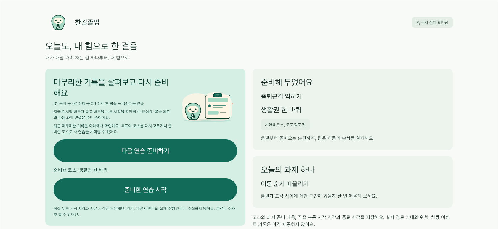
앱 화면 2
출발 전 브리핑과 주행 중 잠금
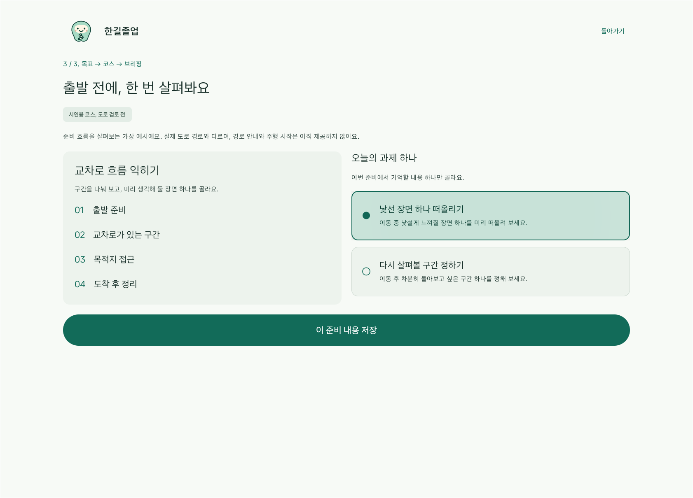
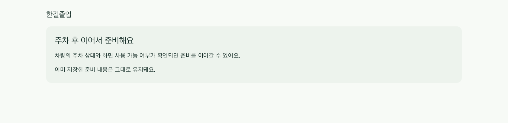
프로젝트 2
내눈 키오스크
2025.10.10 ~ 2025.11.20 / 6명: IoT 1명, Android 5명 / Android 키오스크 리팩토링
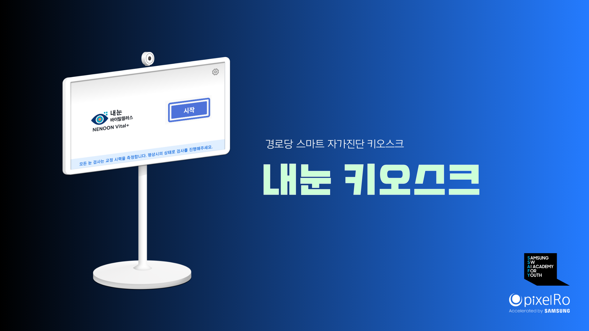
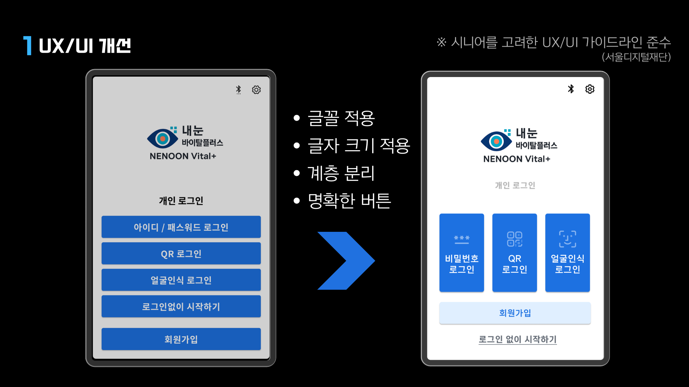
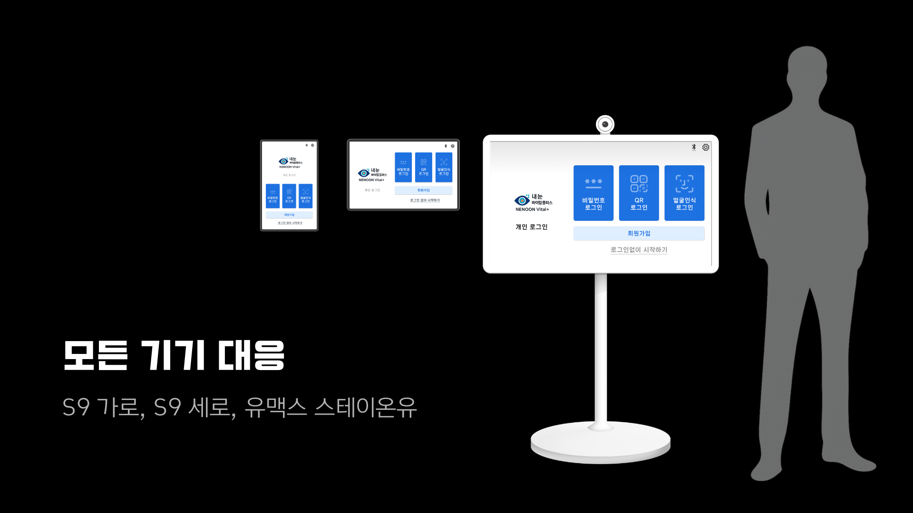
서비스 소개
생체정보 통합 플랫폼으로 고령층의 건강 측정과 관리, 광고 연계를 지원하는 헬스케어 키오스크입니다.
배경
SSAFY 13기 기업연계 프로젝트에서 픽셀로의 내눈 키오스크를 리팩토링하고 운영 요구사항을 반영했습니다. 코드 반출이 허용되지 않아 구현 구조와 문제 해결 과정을 정리했습니다.
핵심 기여
- XML이 남아 있던 UI를 Jetpack Compose로 모두 전환했습니다.
- State Hoisting으로 상태를 외부에서 제어하고, 반복되는 UI를 공통 컴포넌트로 분리했습니다.
- 패키지를 기능과 계층별로 나눠 의존성 방향과 수정 위치를 명확히 했습니다.
기술 스택
앱 화면
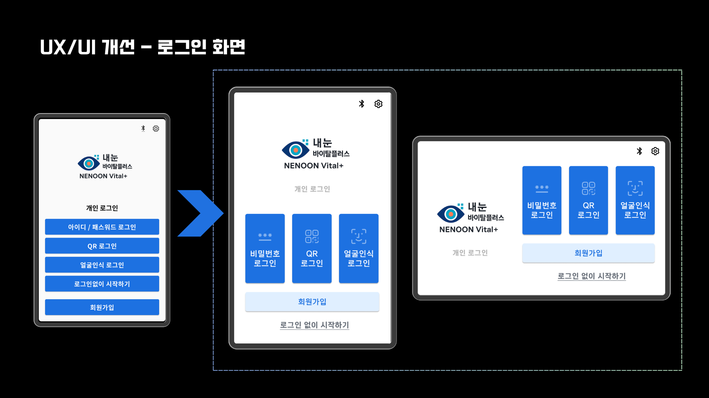
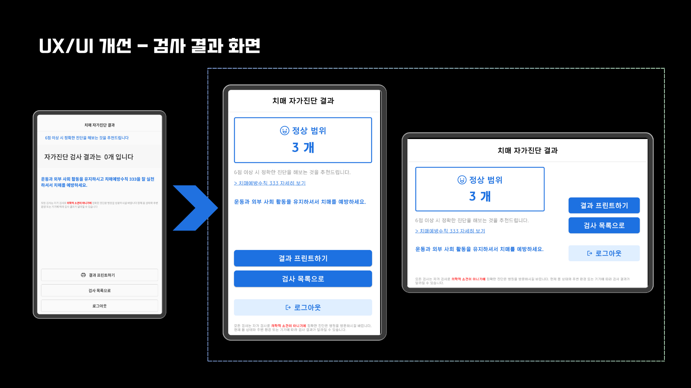
문제 해결 1
Compose 전환과 화면 책임 분리
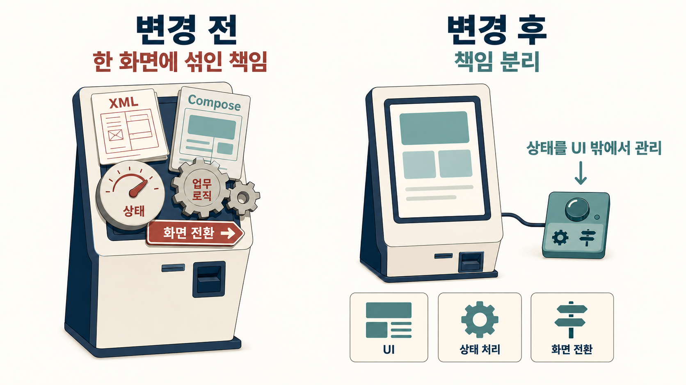
ChatGPT로 제작한 이미지입니다.
문제
- 한 화면 컴포넌트가 데이터 로딩부터 상태 관리, 텍스트 구성, 버튼 클릭까지 처리해 변경 범위를 파악하기 어려웠습니다.
- XML View와 Compose를 함께 사용하고 화면마다 로직이 얽혀 있어 공통 UI 정책을 여러 곳에서 수정해야 했습니다.
원인
상태를 소유하는 곳과 UI를 그리는 곳이 분리되지 않아 화면마다 상태 처리와 공통 UI 구현 방식이 달랐습니다.
해결
- XML UI를 Compose로 전환하고, State Hoisting으로 상태 관리와 비즈니스 로직, 화면 전환 판단을 Route와 ViewModel로 옮겼습니다.
- 제목, 설명, 표와 목록, 버튼, 체크 영역을 공통 컴포넌트로 분리했습니다.
- 기능별 패키지 안에서 Route, Screen, Component의 책임을 나눴습니다.
결과
- 텍스트나 배치, 버튼을 바꿀 때 상태 처리 코드를 함께 수정할 필요가 줄었습니다.
- 다국어, 글자 크기, 버튼 스타일을 공통 컴포넌트에서 한 번에 변경할 수 있게 됐습니다.
대체안 / 회고
XML을 유지하고 Compose를 일부 도입하는 방법도 검토했습니다. 공통 UI를 프리뷰로 확인하고 상태를 외부에서 제어하기 위해 Compose로 통일하고 Screen과 Component를 분리했습니다.
문제 해결 2
레거시 패키지 구조 재편
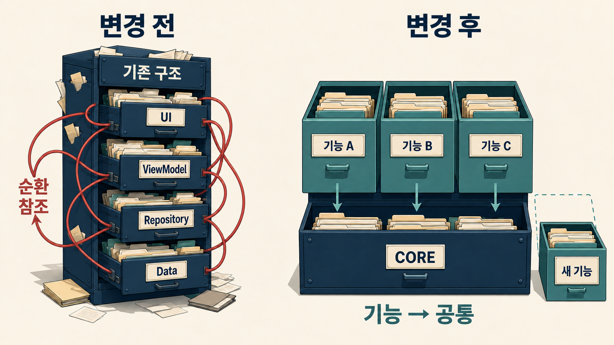
ChatGPT로 제작한 이미지입니다.
문제
패키지와 의존성이 뒤얽혀 코드를 파악하기 어려웠습니다. 새 기능을 추가할 때 다른 화면에 미치는 영향도 예상하기 어려웠습니다.
원인
화면, 로직, 데이터가 한 패키지에 모여 있었고 ViewModel, Repository, UI가 서로 참조해 의존성 방향이 불명확했습니다.
해결
- 패키지를 기능별로 나눴습니다.
- 각 기능 안에서 Route, Screen, Component, ViewModel의 책임과 참조 방향을 정리했습니다.
- 공통 로직은 core 영역으로 옮겨 중복과 순환 참조를 줄였습니다.
결과
- 기능을 수정할 때 관련 코드와 공통 코드를 구분해서 찾을 수 있게 됐습니다.
- 새 화면의 코드를 둘 위치가 명확해졌고, 변경이 다른 기능에 미치는 영향을 따라가기 쉬워졌습니다.
대체안 / 회고
공통 유틸만 분리하는 방법도 검토했지만, 서로 참조하는 기능이 그대로 남으면 같은 문제가 반복될 수 있어 기능별로 패키지를 나눴습니다.
문제 해결 3
메모리 누수 개선
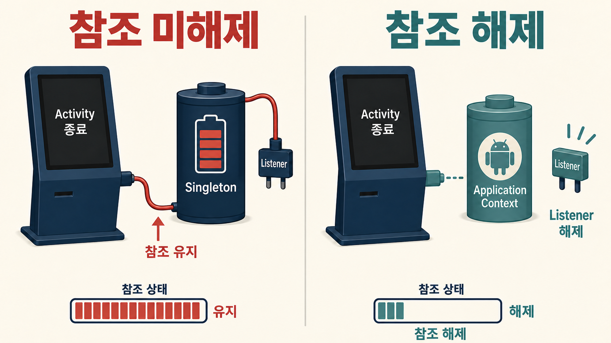
ChatGPT로 제작한 이미지입니다.
문제
Singleton과 Listener에 참조가 남아 키오스크를 오래 실행할 때 메모리 누수가 발생할 수 있었습니다.
원인
- Singleton처럼 오래 유지되는 객체가 Activity Context를 참조하고 있었습니다.
- 등록한 Callback과 Listener를 해제하지 않아 화면이 종료된 뒤에도 참조가 남았습니다.
해결
- 화면 참조가 필요 없는 곳은 Application Context를 사용하고 Hilt로 객체의 보유 범위를 조정했습니다.
- onDispose와 onCleared에서 Listener와 리소스를 해제했습니다.
- Compose에서는 remember와 DisposableEffect로 생성과 해제 시점을 관리했습니다.
- 순환 참조가 우려되는 곳은 WeakReference 사용을 검토했습니다.
결과
- 종료된 화면을 붙잡던 Context와 Listener 참조를 해제했습니다.
- 장시간 실행 시 누수가 발생할 수 있는 참조 경로를 정리했습니다.
회고
메모리 누수를 확인할 때 개별 코드뿐 아니라 객체가 누구를 참조하고 언제 해제되는지 함께 살펴봐야 한다는 점을 배웠습니다.
결과
내눈 키오스크 성과와 회고
주요 결과
- SSAFY 13기 구미캠퍼스 자율 프로젝트 우수상을 받았습니다.
- 상용 키오스크 앱의 UI를 Compose로 통일하고 Route, Screen, Component의 책임을 나눴습니다.
- Activity Context, Listener, Singleton에 남아 있던 참조를 정리해 메모리 누수 요인을 제거했습니다.
- 패키지를 기능과 계층별로 나누고 공통 UI를 분리해 같은 변경을 여러 곳에 반복하는 일을 줄였습니다.
회고
- 초기에 기업과 팀이 이해한 요구사항이 달라 설계를 다시 수정했습니다. 기존 코드와 요구사항을 먼저 정리하고 작업 범위와 우선순위를 맞출 필요가 있었습니다.
- 화면을 Compose로 옮기면서 상태 관리, 공통 UI, 운영 시나리오도 함께 정리해야 같은 수정을 반복하지 않을 수 있다는 점을 배웠습니다.
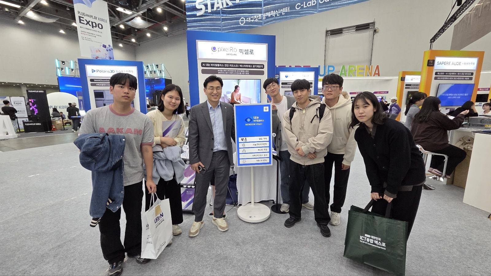
프로젝트 3
모리, Mo-Re
2025.08.25 ~ 2025.09.29 / 6명: Backend 4명, Android 2명 / Android 구조 설계, 시계열 차트와 메트릭 조회 개발
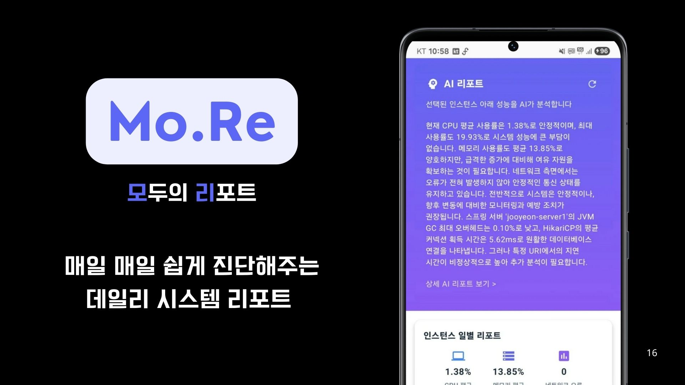
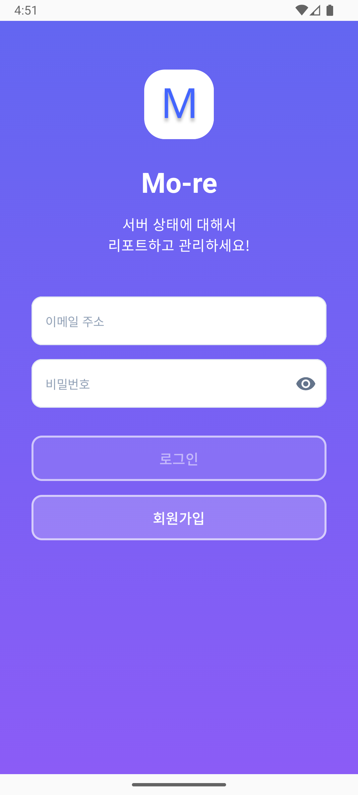
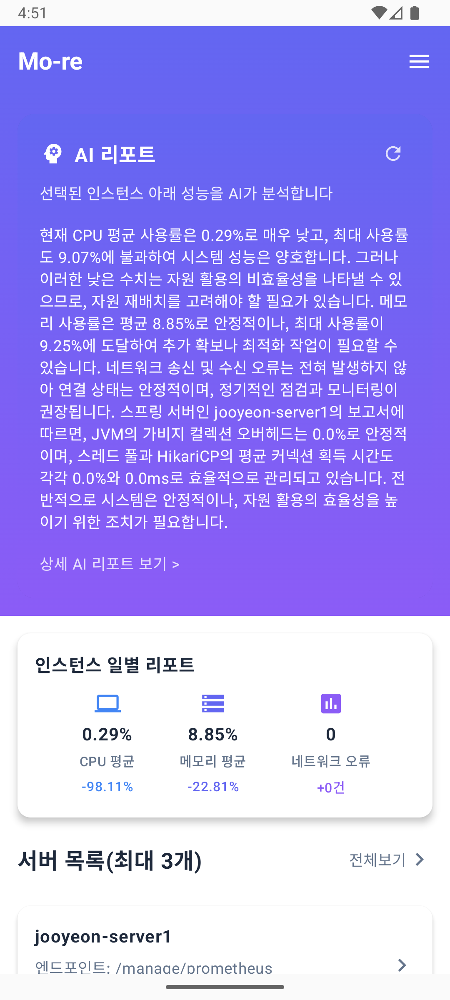
서비스 소개
서버 상태와 성능을 차트와 리포트로 보여주는 Android 모니터링 앱입니다.
배경
모바일에서도 서버 상태를 확인할 수 있도록 기획했습니다. 코드 반출이 허용되지 않아 구현 구조와 문제 해결 과정을 정리했습니다.
핵심 기여
- 기능을 모듈별로 나누고 Convention Plugin으로 공통 빌드 설정을 관리했습니다.
- Compose로 시계열 차트를 직접 구현했습니다.
- 6개 API를 병렬 호출해 로딩 시간을 약 356ms에서 156ms로, 약 56% 줄였습니다.
기술 스택
앱 화면
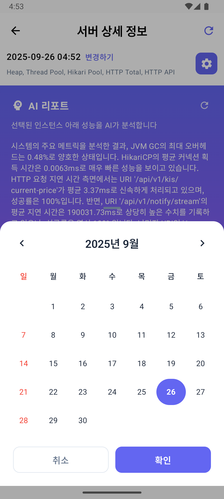
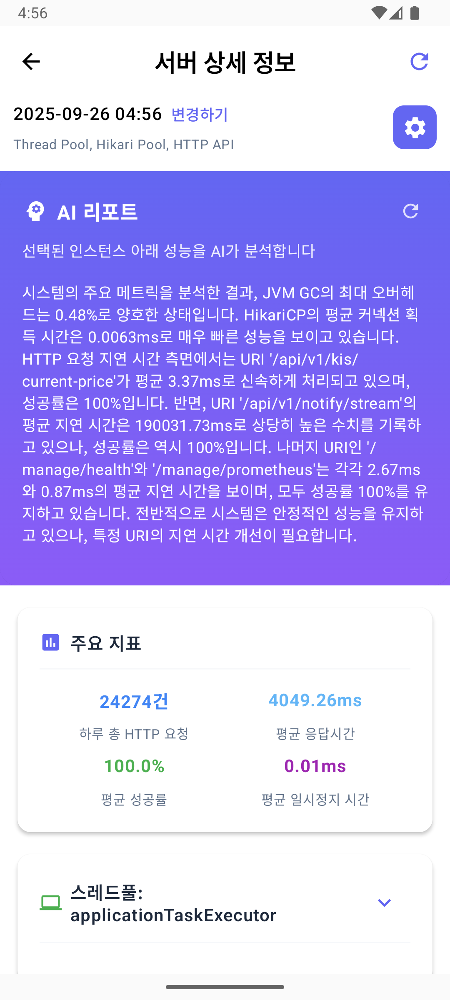
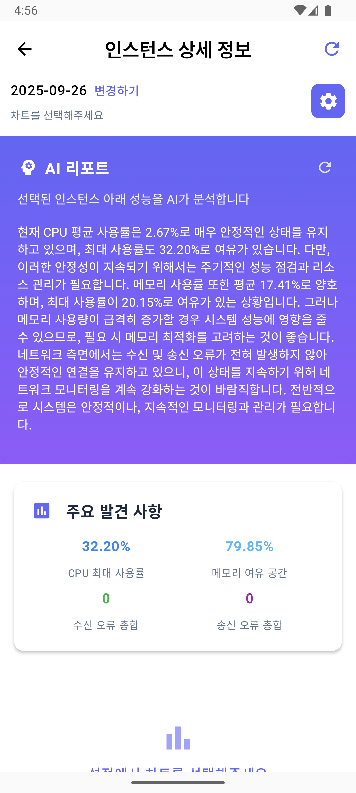
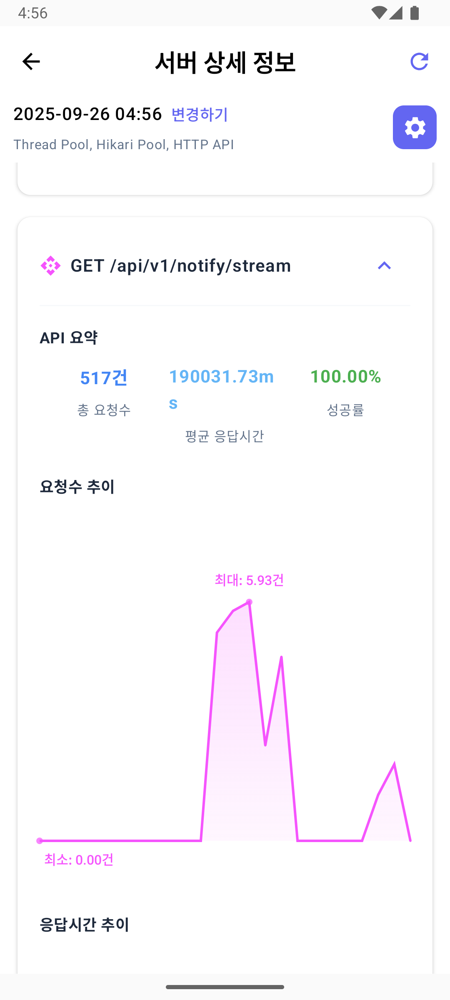
문제 해결 1
6개 API 병렬 처리와 부분 실패 대응
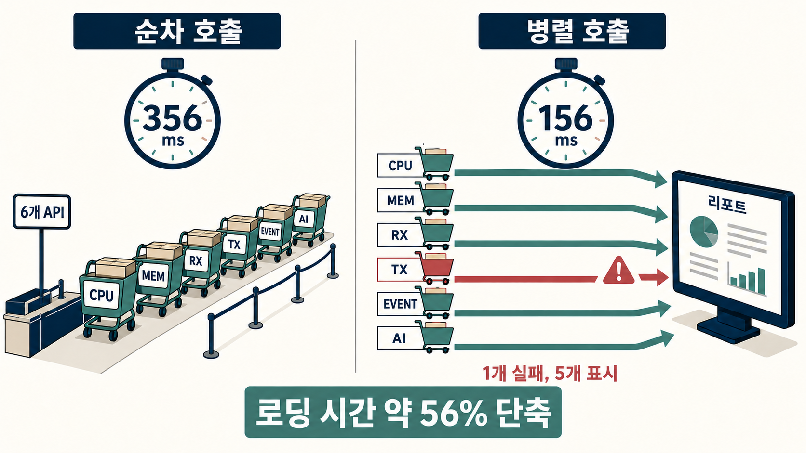
ChatGPT로 제작한 이미지입니다.
문제
- CPU, 메모리, 네트워크 수신과 송신, 이벤트 요약, AI 리포트 API를 순차 호출해 로딩에 약 356ms가 걸렸습니다.
- API 하나가 실패하면 전체 리포트를 보여주지 못할 수 있었고, 실패한 API를 찾기도 어려웠습니다.
원인
API를 하나씩 await해 대기 시간이 누적됐습니다. 요청별 실패를 분리하고 성공한 데이터만 표시하는 처리도 없었습니다.
해결
- supervisorScope와 async로 6개 API를 독립된 코루틴에서 병렬 호출했습니다.
- 각 비동기 블록에서 runCatching으로 실패를 처리해 다른 요청이 취소되지 않도록 했습니다.
- 실패한 API와 원인은 개별 로그에 남기고, 성공한 데이터는 화면에 표시했습니다.
결과
- 전체 로딩 시간이 약 356ms에서 156ms로, 약 56% 줄었습니다.
- 일부 API가 실패해도 성공한 데이터로 리포트를 보여줄 수 있게 됐습니다.
- 요청별 로그로 실패한 API와 원인을 확인할 수 있게 됐습니다.
대체안 / 회고
서버에서 응답을 모아 주는 방법도 검토했습니다. 요청별 실패 처리와 화면용 계산을 앱에서 제어하기 위해 병렬 호출을 선택했고, 성공한 데이터는 계속 보여주도록 구성했습니다.
문제 해결 2
Convention Plugin으로 모듈 빌드 설정 공통화
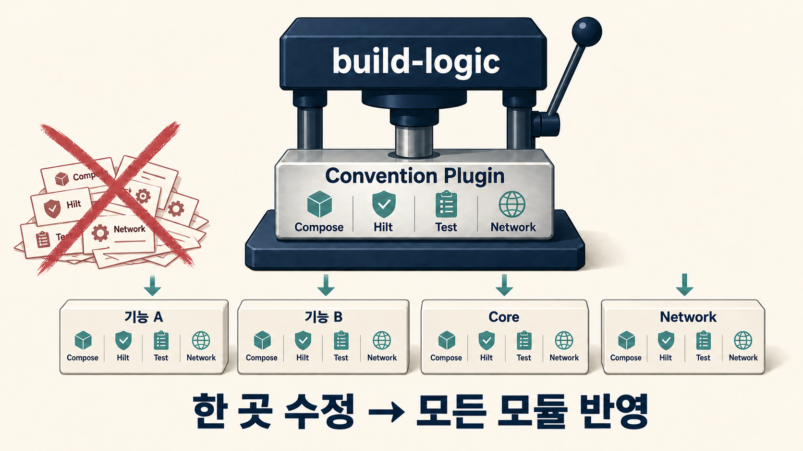
ChatGPT로 제작한 이미지입니다.
문제
Compose, Hilt, 테스트, 네트워크 설정이 모듈마다 반복돼 같은 설정을 여러 곳에서 관리해야 했습니다.
원인
공통 설정을 모듈별로 직접 작성해 새 모듈을 만들 때 설정이 빠지거나 버전과 옵션이 달라질 수 있었습니다.
해결
- build-logic에 Convention Plugin을 정의해 공통 설정과 의존성을 모았습니다.
- Feature, Core, Network, Datastore, Hilt, Compose, Test, Quality 플러그인을 용도별로 나눴습니다.
- 기능 모듈에서는 id("mori.android.feature")처럼 플러그인을 선언해 필요한 설정을 적용했습니다.
결과
- 공통 빌드 설정은 build-logic 한 곳을 수정하면 관련 모듈에 반영됩니다.
- 새 기능 모듈과 공통 모듈에도 플러그인을 선언해 이름 규칙, Compose와 Hilt 설정, 의존성을 함께 적용할 수 있게 됐습니다.
- 모듈을 추가할 때 반복하던 설정 작업과 설정 누락 가능성을 줄였습니다.
대체안 / 회고
루트 build.gradle.kts, apply(from), Version Catalog도 검토했습니다. 버전 관리뿐 아니라 플러그인, 옵션, 의존성을 함께 적용해야 해 Convention Plugin을 선택했습니다.
결과
모리, Mo-Re 성과와 회고
주요 결과
- 기능별로 모듈을 나누고 여러 기능에서 사용하는 코드는 공통 모듈로 분리했습니다.
- API 병렬 호출로 로딩 시간을 약 356ms에서 156ms로, 약 56% 줄였습니다.
- Compose로 서버 메트릭을 표시하는 시계열 차트를 직접 구현했습니다.
- Convention Plugin을 구성해 모듈마다 반복되던 Gradle 설정을 build-logic에서 관리했습니다.
회고
- 팀원의 예비군 일정과 서로 다른 프로젝트 이해도로 초반 작업이 지연됐습니다. 주 3회 리뷰로 진행 상황과 역할을 맞추는 방식이 필요했습니다.
- 일정 안에 단위 테스트와 UI 테스트를 작성하지 못했습니다. 다음 프로젝트에서는 초기부터 테스트를 작성하고 TDD도 적용해 볼 계획을 세웠습니다.
- 멀티 모듈과 build-logic은 초기 설정에 시간이 들었지만 기능별 책임과 공통 설정을 수정할 위치를 분명하게 만들었습니다.
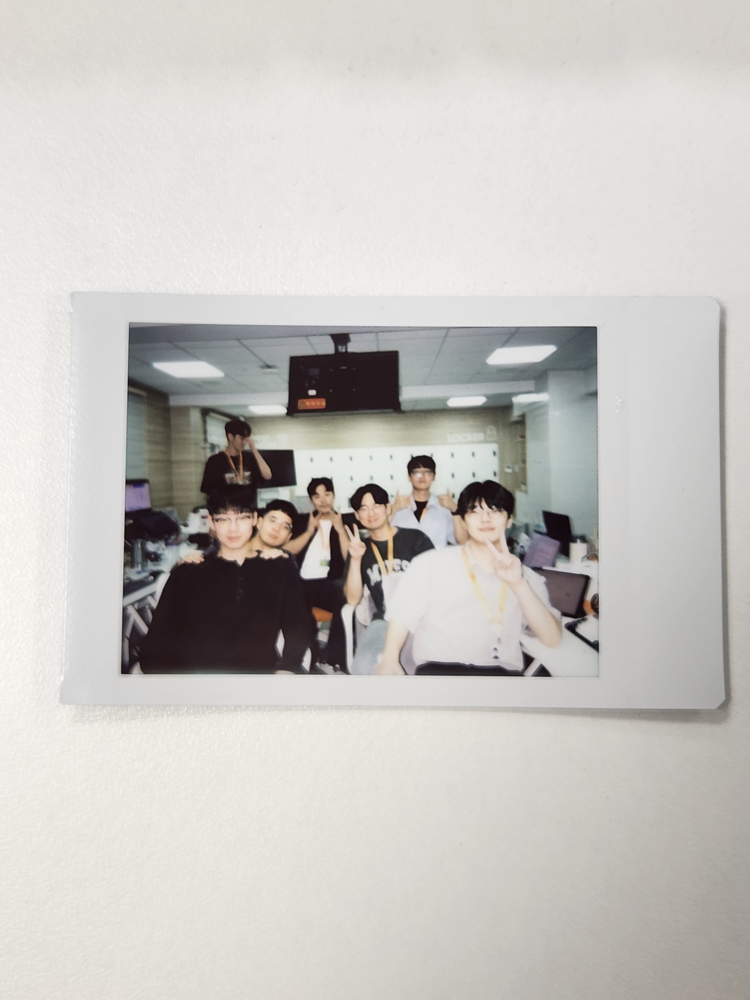
프로젝트 4
Glim
2025.07.07 ~ 2025.08.18 / 6명: Backend 2명, Android 2명, Frontend 1명, Backend & Android 1명 / Android 앱 개발
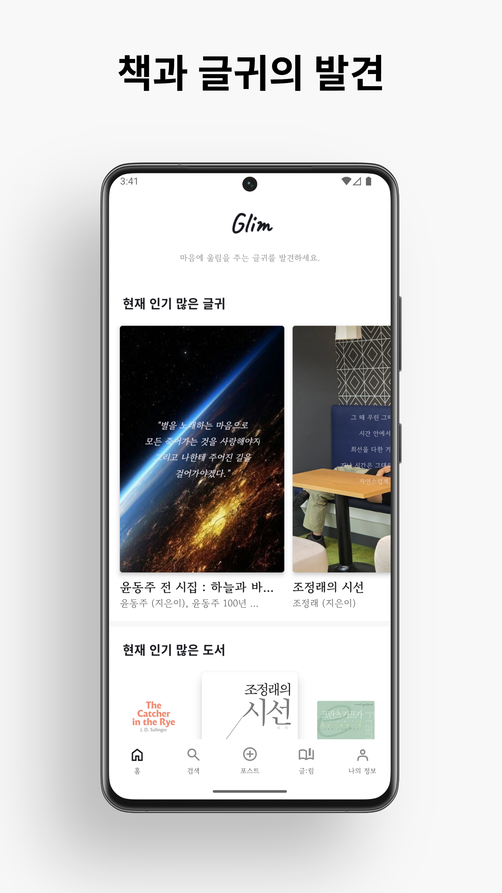
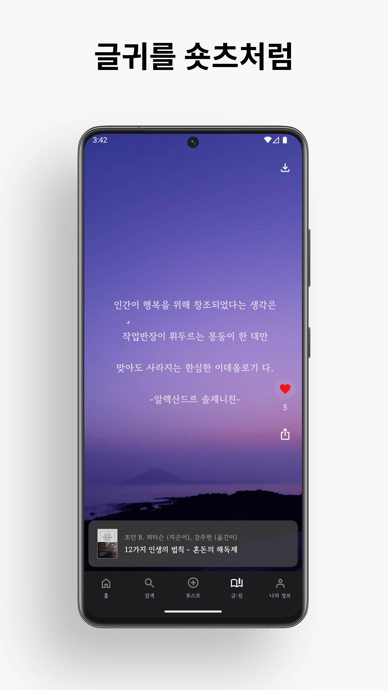
서비스 소개
마음에 남은 글귀를 짧은 이미지 콘텐츠인 '글림'으로 만들어 공유하는 앱입니다.
배경
숏폼을 소비하는 익숙한 방식에 글귀를 담아 책에 관심을 갖도록 기획했습니다.
핵심 기여
- Orbit MVI로 화면 상태와 일회성 이벤트를 ViewModel에서 관리했습니다.
- Coroutine과 DataStore로 세션과 토큰을 관리하고 인증 예외를 처리했습니다.
- Channel 기반 Navigator로 화면 코드와 화면 전환 처리를 분리했습니다.
- JUnit과 MockK로 ViewModel 테스트 130여 개를 작성했습니다.
기술 스택
앱 화면
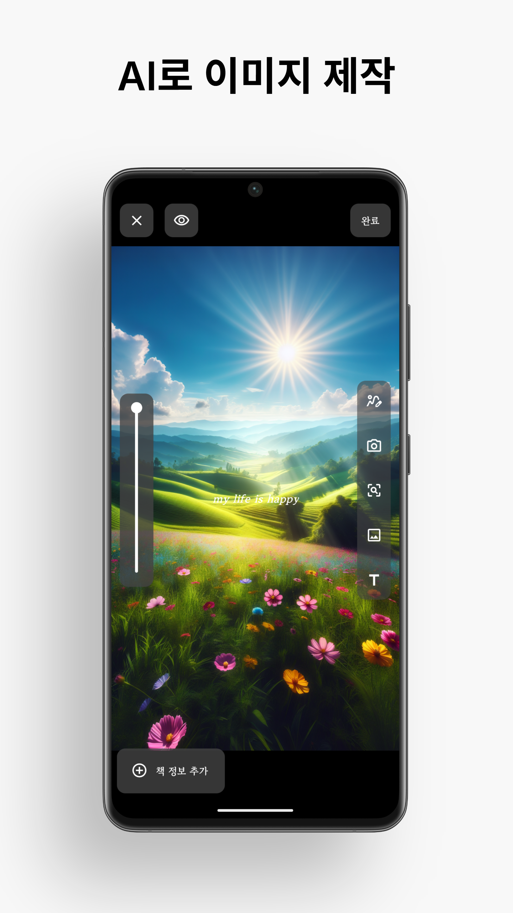
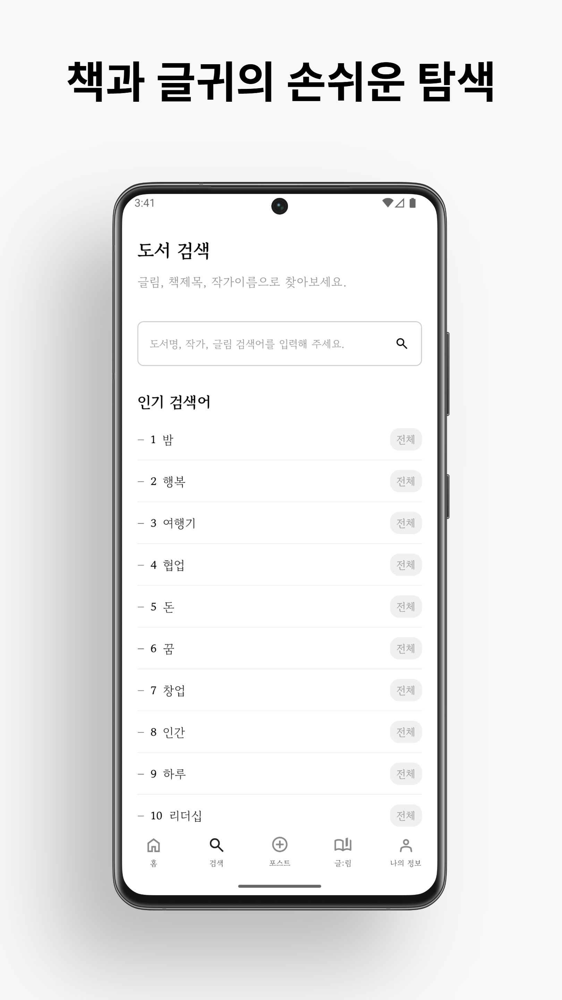
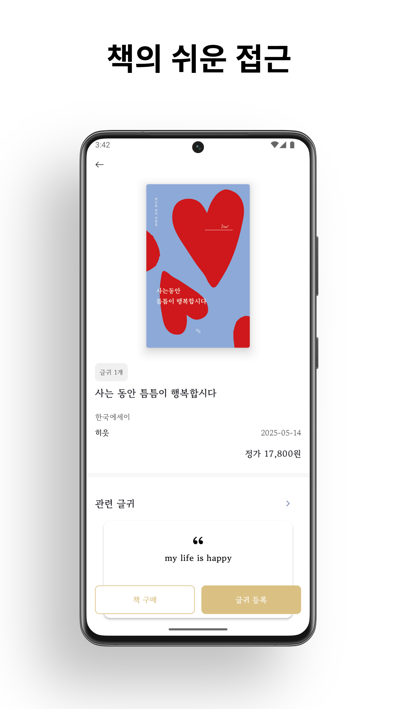
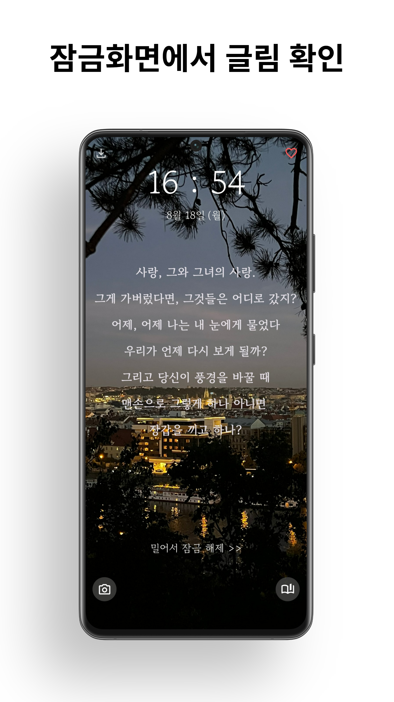
문제 해결 1
토큰 재발급과 인증 예외 처리
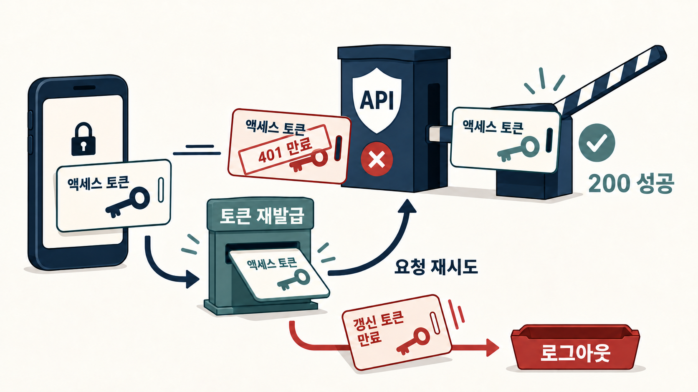
ChatGPT로 제작한 이미지입니다.
문제
토큰 만료와 401 응답 재시도, 재시도 횟수 초과, 로그아웃 사유 전달을 같은 기준으로 처리하기 어려웠습니다.
원인
화면과 네트워크 계층에서 인증 정보를 직접 다루면 헤더 추가, 재발급 시점, 재시도, 로그아웃 처리가 여러 곳에 흩어질 수 있었습니다.
해결
- 인증 기능을 별도 모듈로 분리하고 토큰 재발급부터 로그아웃까지 처리하도록 구성했습니다.
- AuthDataStore는 토큰과 사용자 정보를 저장하고, AuthManager는 메모리 캐시와 로그아웃 이벤트를 관리합니다.
- AuthInterceptor는 인증 헤더를 추가하고, TokenAuthenticator는 401 응답 시 토큰을 재발급하고 요청을 재시도합니다.
- Refresh Token 만료와 재시도 횟수 초과는 LogoutReason으로 구분해 UI에 전달했습니다.
결과
- 화면과 도메인 계층에서 토큰을 직접 관리하는 코드를 제거했습니다.
- 재발급, 재시도, 로그아웃 기준을 인증 모듈에서 관리할 수 있게 됐습니다.
- 화면에서는 전달받은 LogoutReason에 따라 안내 메시지를 표시합니다.
회고
저장, 캐시, 네트워크 재시도의 책임을 나누고 AuthManager로 상태와 이벤트를 연결해 화면마다 토큰 코드를 반복하지 않도록 했습니다.
문제 해결 2
Orbit MVI로 화면 상태 관리와 테스트 정리
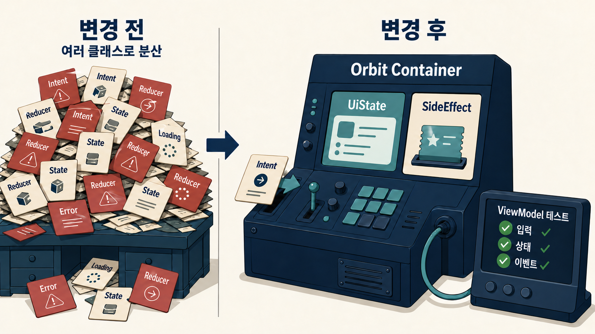
ChatGPT로 제작한 이미지입니다.
문제
- MVI를 직접 구현하면서 Intent, Reducer, State 클래스가 화면마다 늘어났습니다.
- 입력 검증, 로딩, 오류 처리에도 반복 코드가 필요했고 테스트할 범위를 정하기 어려웠습니다.
원인
화면별 클래스로 상태 관리 코드가 흩어져 있었고 UI가 비즈니스 로직도 직접 처리하고 있었습니다.
해결
- Orbit MVI를 도입해 상태 관리 코드를 ViewModel로 모았습니다.
- ContainerHost<UiState, SideEffect>의 container에서 상태 변경과 일회성 이벤트를 관리했습니다.
- 화면별 UiState와 SideEffect를 정의하고 입력 검증, 로딩, 오류 처리를 테스트했습니다.
결과
- Intent와 Reducer 클래스를 개별 정의하던 반복 코드를 줄였습니다.
- 화면 상태 변화와 Toast, 화면 전환 같은 일회성 이벤트를 나눠 검증할 수 있게 됐습니다.
- UI의 비즈니스 로직을 ViewModel로 옮겨 화면별로 같은 방식으로 상태를 관리했습니다.
대체안 / 회고
sealed Intent와 단일 reducer, StateFlow와 확장 함수 조합도 검토했습니다. 상태와 일회성 이벤트를 다루는 컨테이너를 활용하기 위해 Orbit을 선택했고, ViewModel에서 테스트할 로직을 모을 수 있었습니다.
문제 해결 3
Channel과 Navigator로 화면 전환 책임 분리
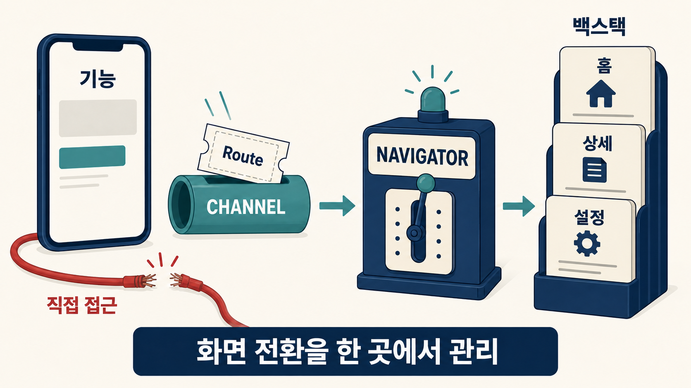
ChatGPT로 제작한 이미지입니다.
문제
- Screen에서 NavBackStack에 직접 접근해 화면 코드가 화면 전환 구현에 의존했습니다.
- 화면 전환, BackStack 초기화, 뒤로 가기를 화면마다 다르게 처리해 비슷한 코드가 반복됐습니다.
원인
화면 전환 코드가 흩어져 전환 방식을 바꾸려면 여러 화면을 수정해야 했습니다. 문자열 Route에는 오타가 생길 위험도 있었습니다.
해결
- Navigator 인터페이스와 NavigatorImpl을 별도 모듈에 정의하고 화면은 인터페이스에만 의존하도록 했습니다.
- ViewModel은 Channel<InternalRoute>로 화면 전환 요청을 보냅니다.
- 전용 ViewModel과 Composable이 요청을 받아 NavBackStack을 조작하도록 했습니다.
결과
- Screen에서 NavBackStack과 Controller에 직접 접근하는 코드를 제거했습니다.
- ViewModel은 navigator.navigate로 요청하고, 전용 Composable이 실제 전환을 처리합니다.
- Route를 타입으로 정의해 문자열 오타로 인한 오류를 줄였습니다.
- 전환 구현을 바꿀 때 기능별 화면을 함께 수정할 필요가 줄었습니다.
회고
화면은 이동 요청만 보내고 전용 Composable이 백스택을 처리하도록 나눴습니다. 화면 코드와 이동 구현을 각각 수정할 수 있도록 책임을 구분했습니다.
결과
Glim 성과와 회고
주요 결과
- SSAFY 13기 구미캠퍼스 공통 프로젝트 우수상을 받았습니다.
- 토큰 저장, 메모리 캐시, 인증 헤더, 재발급의 책임을 나누고 인증 예외를 처리했습니다.
- Compose와 Orbit MVI로 화면 상태와 일회성 이벤트를 분리했습니다.
- ViewModel 테스트 130여 개로 상태 변화와 예외 처리를 검증했습니다.
회고
- 사용자 테스트가 늦어 화면 수정이 개발 후반에 몰렸습니다. 초기 시제품부터 사용자 반응을 확인할 필요가 있었습니다.
- Orbit으로 상태 변경을 모으고 테스트를 작성해 기능을 수정한 뒤 기존 동작을 확인할 기준을 만들었습니다. 기능 개발과 작은 리팩토링을 함께 진행할 필요가 있었습니다.
- 상태 구독과 일회성 이벤트를 다루며 Cold Stream과 Hot Stream의 차이를 학습했습니다.
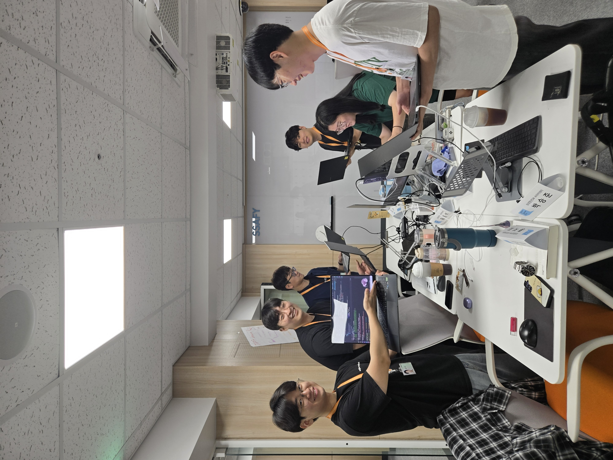